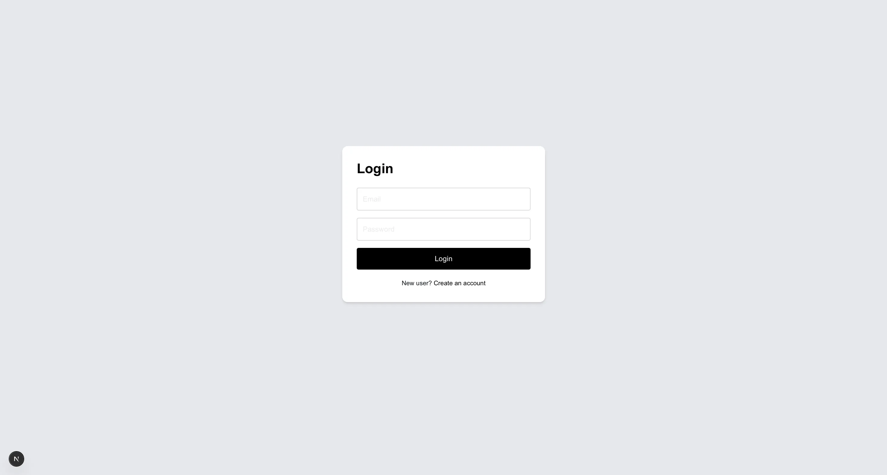
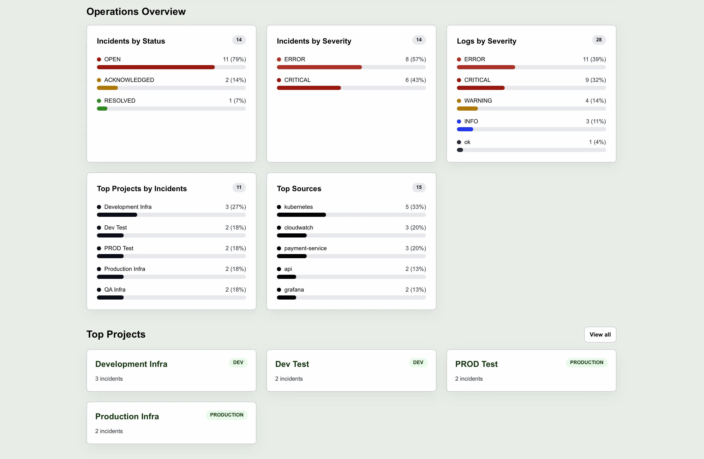
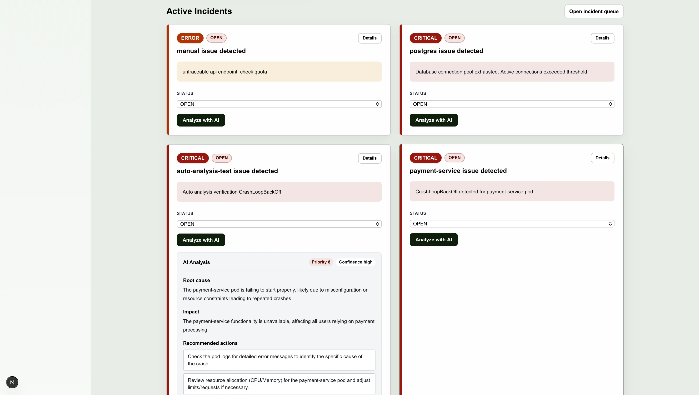
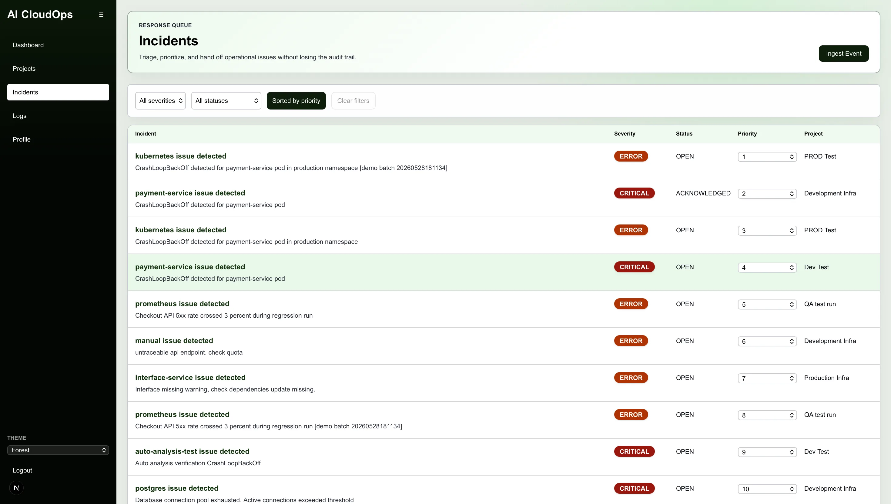
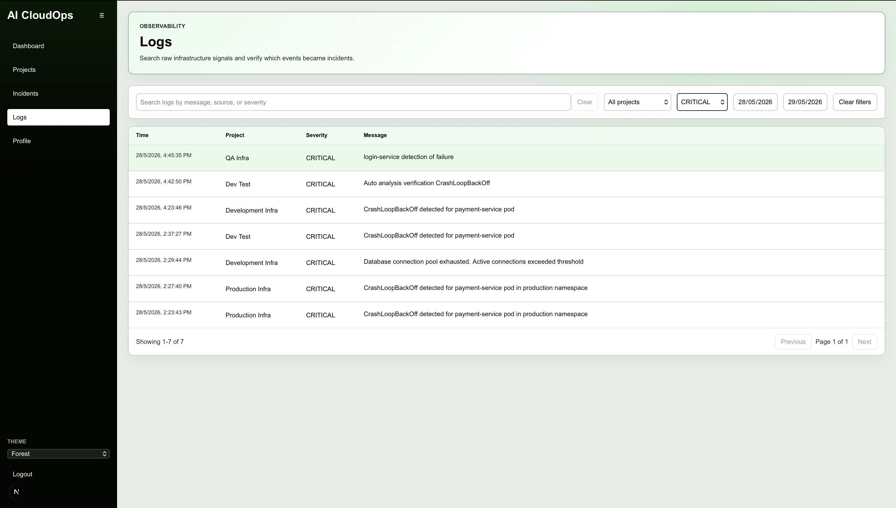
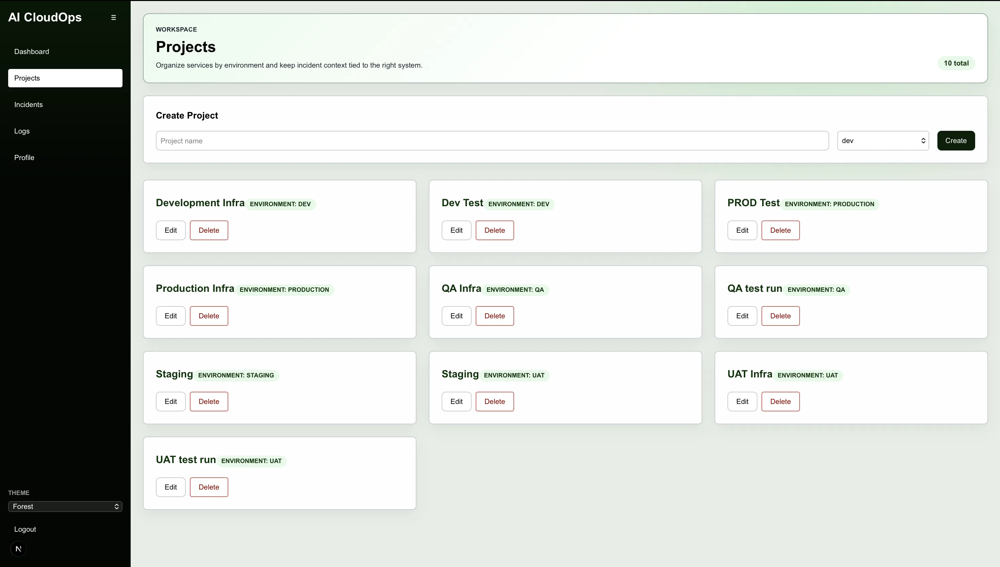

Next.js operations UI
Incident, monitoring and guided-investigation workflows.
An operations workspace bringing logs, incidents, infrastructure health, root-cause analysis and remediation guidance into one workflow.
Cloud incident response is slowed by fragmented telemetry and context switching. Engineers must assemble logs, health signals and operational knowledge before forming a useful hypothesis.
The platform organizes incident signals behind authenticated APIs, persists operational context, and applies AI to summarize evidence, suggest likely causes and surface remediation guidance.
Telemetry → Ingestion → Incident context → Health correlation → AI analysis → Root-cause hypothesis → Remediation guidance
Selected screens from the working product show the authenticated entry point, incident workflow, observability views and project management interface.







Incident, monitoring and guided-investigation workflows.
Separates ingestion, incidents, analysis and recommendations.
Stores users, operational events and incident context.
Consistent local and cloud service execution.
Recommendations use collected operational context rather than treating the model as a source of truth.
Ingestion, persistence and analysis boundaries allow models and telemetry sources to change independently.
The product supports investigation decisions; it does not imply autonomous production changes.
API contracts, incident-state transitions and AI fallback evaluation are identified as the next public verification layer; no public test suite is currently linked.
Ingestion, incidents, analysis and recommendations are separated behind authenticated APIs. An exact endpoint count remains unpublished.
Operational context is access-controlled and AI output remains advisory—no autonomous production changes are represented.
Telemetry ingestion, persistence, correlation and model guidance can fail or evolve independently instead of collapsing into one opaque request.
The workflow spends more effort assembling evidence before inference, trading a shorter prompt path for more reviewable guidance.
Containerized execution is documented; a public repository and CI workflow will be linked when they are ready to verify.
Logs, health signals and incident knowledge are inspected across separate tools before a hypothesis can be formed.
Evidence is assembled into one incident context, then AI guidance is presented for human review.